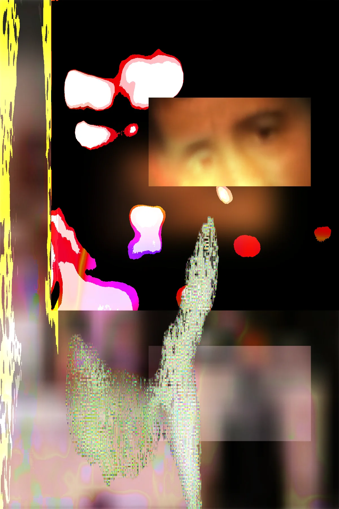

A late-night stack of references, open on the table with no labels. The order is loose, the pace steady, and it occasionally nods to the wide span.
Try the quiet transmission or loop back to the arrival log, then slip into the annex.
Everything else is optional, but nothing stays hidden for long.